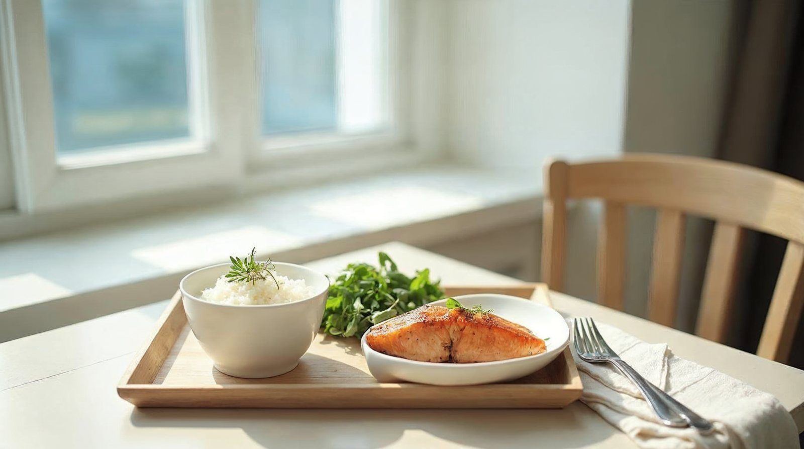
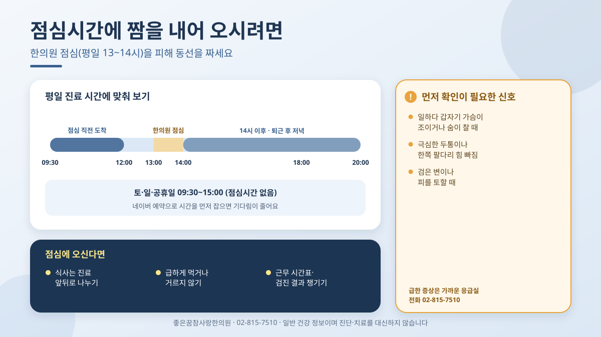

이종호 한의사 감수좋은꿈참사랑한의원 대표원장 (한의사 면허번호 19769)발행 2026-11-23 · 수정 2026-11-26
이 글의 차례
- 왜 점심시간 방문이 어려울까요
- 시간대마다 무엇이 다를까요?
- 점심시간을 쪼개 오면 왜 더 지칠까요
- 예를 들면 이런 경우입니다
- 먼저 이렇게 여쭙니다
- 방문 전에 먼저 해 볼 수 있는 것
- 한의원에서 함께 살필 수 있는 경우
- 점심 무렵 오는 날, 식사는 어떻게 할까요?
- 오래 앉아 일하는 직장인이 스스로 볼 점
- 스스로 점검해 보세요
- 첫 방문은 이렇게 진행됩니다
- 진료를 마치고 오후 업무는 이렇게 보내 보세요
- 이럴 때는 점심보다 다른 시간대를 권합니다
- 점심시간 방문, 이렇게 기록해 두면 다음이 쉬워집니다
- 점심 무렵 예약을 바꿔야 할 때
- 회사 건강검진 결과지는 어떻게 활용하나요?
- 사무실에서 해 볼 수 있는 작은 습관
- 다시 오실 때는 어떻게 이어서 보나요?
- 이렇게 기록해 오시면 상담이 쉬워집니다
- 이런 증상은 먼저 확인이 필요합니다
- 함께 읽으면 좋은 글
회사 점심시간에 잠깐 들르려는 직장인이 많습니다. 다만 한의원도 평일 13:00~14:00에는 점심시간이라 시간대를 미리 맞추지 않으면 헛걸음하기 쉬워, 하루 동선을 먼저 그려 보는 것이 좋습니다.
왜 점심시간 방문이 어려울까요
- 직장 점심시간과 한의원 점심시간(평일 13:00~14:00)이 겹치는 경우가 많습니다.
- 점심 직전과 직후에는 같은 생각을 한 분들이 몰려 기다리는 시간이 길어질 수 있습니다.
- 진료와 이동, 식사를 한 시간 안에 모두 하려면 시간이 빠듯합니다.
- 식사를 급하게 하거나 거르면 오후 내내 속이 불편해지기도 합니다.
시간대마다 무엇이 다를까요?
같은 평일이라도 언제 오시느냐에 따라 하루가 꽤 달라집니다. 진료 시간 안에서 내 일정에 맞는 때를 골라 보세요.
- 오전(09:30~13:00): 출근 전이나 오전 반차를 쓰는 날에 맞추기 좋습니다. 12시 전에 도착하시면 점심시간 전까지 여유가 생깁니다.
- 오후(14:00 이후): 회사 점심시간이 늦거나 외근 중에 들를 수 있는 분께 맞습니다. 식사는 진료 앞뒤로 나눠 드시면 됩니다.
- 퇴근 뒤(20:00까지): 업무를 마치고 마음 편히 오실 수 있는 시간입니다. 마지막 접수 시각은 방문 전에 전화로 확인해 주세요.
- 주말(토·일·공휴일 09:30~15:00): 점심시간 없이 이어서 진료합니다.
주말과 공휴일에도 진료하는 것은 평일 낮에 시간 내기 어려운 직장인과 학생, 주중에 가게를 지키시는 분들이 편하게 오실 수 있게 하려는 것입니다.
붐비는 정도는 날마다 달라 미리 말씀드리기 어렵습니다. 원장별 진료 일정과 함께 방문 시간은 네이버 예약이나 전화(02-815-7510)로 미리 확인해 주세요.
점심시간을 쪼개 오면 왜 더 지칠까요
점심시간은 원래 오전 내내 굳어 있던 몸과 머리를 잠깐 쉬게 하는 시간입니다. 그 한 시간을 이동과 진료로 꽉 채우면, 쉬지 못한 채 오후 업무로 들어가게 됩니다.
특히 식사를 급하게 넘기거나 아예 거르면 오후에 속이 더부룩하고 졸음이 몰리기 쉽습니다. 밥과 면 위주로 급히 먹은 날일수록 더 그렇다고 느끼는 분이 많습니다. 그래서 점심 무렵에 오시는 날에는 간단하게라도 식사를 챙기실 수 있도록 동선을 짜 보시기를 권합니다.
서둘러 오시는 것도 몸에는 일입니다. 걸어오신 직후나 식사 직후에는 맥이 달라지기 때문에, 저는 숨이 차서 들어오신 분께는 잠시 쉬시게 한 뒤에 맥을 짚습니다. 몇 분 일찍 출발하시면 그 몇 분이 진료에도 보탬이 됩니다.
예를 들면 이런 경우입니다
- 예를 들어 회사 점심시간이 12시부터 1시까지인 직장인이라면, 한의원 점심시간(13:00~14:00) 바로 앞이라 오가는 시간까지 넣으면 빠듯합니다. 11시 반쯤 외출이 가능하면 그때 오시고, 어렵다면 퇴근 뒤나 주말로 잡는 것이 현실적입니다.
- 예를 들어 점심을 1시 이후에 교대로 먹는 매장 근무자라면, 14시 이후로 시간을 잡고 그 전에 가볍게라도 요기를 하고 오시는 순서가 무리가 적습니다.
- 예를 들어 외근이 잦아 하루 일정이 매번 바뀌는 영업직이라면, 주 단위로 비는 시간을 먼저 표시해 두고 그날 아침에 네이버 예약으로 시간을 확인하는 방법이 편합니다.
- 예를 들어 야근이 잦아 퇴근 시간이 들쭉날쭉한 분이라면, 평일 저녁을 고집하기보다 주말 오전을 고정 방문일로 정해 두는 편이 꾸준히 오시기 좋습니다.

먼저 이렇게 여쭙니다
- 회사 점심시간은 몇 시부터 몇 시까지인가요?
- 퇴근 시간과 회사에서 한의원까지 걸리는 시간은 어느 정도인가요?
- 앉아서 일하는 시간이 하루에 얼마나 되나요?
- 가장 불편한 곳과 심해지는 시간대는 언제인가요?
방문 전에 먼저 해 볼 수 있는 것
- 평일 진료 09:30~20:00, 점심 13:00~14:00을 기준으로 동선 짜기
- 점심 직전(12시 이전 도착)이나 14시 이후로 잡고 식사는 앞뒤로 나누기
- 퇴근 후 저녁 시간대 이용하기(평일 20:00까지, 마지막 접수 시각은 방문 전 전화로 확인)
- 주말이 편하면 토·일·공휴일 09:30~15:00 이용하기(점심시간 없음)
- 네이버 예약이나 전화(02-815-7510)로 방문 시간을 미리 확인하기
한의원에서 함께 살필 수 있는 경우
- 오래 앉아 있어 목과 어깨가 뻐근할 때 책상 앞 자세와 함께 살핍니다.
- 점심 뒤 속이 더부룩하거나 졸음이 몰릴 때 식사 속도와 구성을 함께 묻습니다.
- 오후에 눈이 피로하고 머리가 무겁다고 느낄 때 화면 사용 시간과 휴식을 함께 살핍니다.
좋은꿈참사랑한의원에서는 접수하신 뒤 모든 분께 맥부터 짚으며 불편한 곳과 생활을 여쭙고, 그날 필요한 치료를 한 뒤 귀가 전 안내를 드립니다.
진찰하면서 일정을 고려해 그날 진료를 함께 정하고, 귀가 전에는 사무실에서 할 수 있는 관리법을 알려 드립니다.
저는 '잘 먹고, 잘 싸고, 잘 자고, 마음 편하고, 몸 따뜻하게', 이 다섯 가지를 몸이 회복하는 바탕으로 봅니다. 목과 어깨가 아파 오셨더라도 점심을 어떻게 드시는지, 밤잠은 어떤지를 함께 여쭙는 까닭입니다.
점심 무렵 오는 날, 식사는 어떻게 할까요?
진료 전에 배가 너무 고프면 치료받는 동안 기운이 빠지거나 어지러울 수 있습니다. 반대로 급하게 많이 먹고 바로 치료를 받으면 속이 더부룩할 수 있습니다.
12시 전에 오시는 날이라면 오전에 바나나나 우유처럼 가벼운 간식을 조금 드시고, 진료 뒤에 점심을 드시는 방법이 있습니다. 14시 이후에 오시는 날이라면 점심을 평소보다 조금 가볍게, 채소와 단백질 반찬을 곁들여 천천히 드시고 오시면 됩니다.
어느 쪽이든 점심을 아예 거르지는 않도록 해 주세요. 끼니를 거른 날의 오후는 몸도 마음도 쉽게 지칩니다.
오래 앉아 일하는 직장인이 스스로 볼 점
- 오전보다 오후로 갈수록 목과 어깨가 더 뻐근해지나요?
- 주말에 쉬면 덜하고, 월요일 오후면 다시 무거워지나요?
- 뒷목이 뻐근한 날에는 머리도 무겁거나 조이는 느낌이 드나요?
- 키보드를 오래 치면 손목이나 손가락이 저리나요?
- 퇴근 뒤에도 어깨가 풀리지 않아 잠들기가 어렵나요?
여러 개가 해당된다면 그 내용을 그대로 적어 오세요. 언제 심해지고 언제 덜한지가 진료 방향을 정하는 데 중요한 단서가 됩니다.
스스로 점검해 보세요
- 회사 점심시간과 한의원 점심시간(평일 13:00~14:00)이 겹치는지 확인했다
- 회사에서 한의원까지 오가는 데 걸리는 시간을 알고 있다
- 진료 뒤 돌아가야 하는 시각을 정해 두었다
- 그날 점심을 언제 먹을지 정했다
- 첫 방문이라면 시간이 넉넉한 날(퇴근 뒤나 주말)로 골랐다
- 네이버 예약이나 전화(02-815-7510)로 시간을 확인했다
첫 방문은 이렇게 진행됩니다
처음 오시면 접수에서 기본 정보를 적으신 뒤 진료실로 들어오십니다. 모든 분의 맥을 먼저 짚고, 맥을 짚으며 불편한 곳과 언제부터인지, 하루 일하는 모습을 여쭙습니다. 이어서 목·어깨나 허리를 손으로 살피는 진찰을 합니다.
근육이나 힘줄 상태를 더 봐야 한다고 판단되면 초음파로 확인하기도 합니다. 그다음 오늘 받을 치료와 그 이유를 설명해 드리고 치료를 진행합니다. 귀가 전에는 사무실에서 지킬 요령과 다음 방문 시기를 말씀드립니다.
초진은 문진과 진찰에 시간이 들어 재진보다 오래 걸릴 수 있습니다.
진료를 마치고 오후 업무는 이렇게 보내 보세요
- 돌아가는 길에 물을 한 잔 드시고, 서둘러 뛰지 말고 걸어서 가세요.
- 침 치료를 받은 날은 과음과 무리한 운동을 피해 주세요.
- 그날 치료 뒤 지킬 일은 귀가 전에 말씀드리니, 휴대폰 메모에 적어 두세요.
- 오후에 불편이 달라진 느낌이 있다면 시각과 함께 한 줄 적어 다음 진료 때 알려 주세요.
이럴 때는 점심보다 다른 시간대를 권합니다
- 처음 오시는 날: 문진과 진찰에 시간이 들어 한 시간 안에 오가기 빠듯합니다.
- 불편한 곳이 여러 군데라 이야기할 것이 많은 날: 퇴근 뒤나 주말에 차분히 나누시는 편이 좋습니다.
- 오후에 중요한 회의나 발표가 있는 날: 시간에 쫓기면 마음이 편하지 않아 다른 날로 잡으시기를 권합니다.
- 비나 눈이 와서 오가는 길이 오래 걸리는 날: 이동 시간이 늘어나니 일정을 넉넉히 잡아 주세요.
반대로 재진처럼 짧게 이어서 보는 날이라면 점심 직전이나 14시 이후 시간대도 충분히 활용하실 수 있습니다.
점심시간 방문, 이렇게 기록해 두면 다음이 쉬워집니다
점심 무렵에 몇 번 오셨다면 그날그날 한의원에 도착한 시각, 진료를 마친 시각, 회사에 돌아간 시각을 짧게 적어 두세요. 두세 번만 모여도 내 일정에서 몇 시에 출발하면 여유가 있는지 감이 잡힙니다.
그날 점심을 언제 먹었는지, 오후에 속이 편했는지도 한 단어씩 덧붙여 보세요. 점심을 먼저 먹은 날과 나중에 먹은 날 가운데 어느 쪽이 더 편했는지 비교하면 다음 방문 동선을 정하기가 쉬워집니다.
점심 무렵 예약을 바꿔야 할 때
갑자기 회의가 잡혀 예약 시간에 오기 어렵다면 알게 된 즉시 네이버 예약이나 전화로 옮겨 주세요. 빈 시간을 다른 분이 쓰실 수 있고, 다음 시간도 여유 있게 다시 잡을 수 있습니다.
진료 시간을 회사 일정표에 미리 적어 두면 회의가 겹쳐 놓치는 일이 줄어듭니다. 오기 어려운 주가 있더라도 사무실에서 지킬 요령은 이어 가시면 됩니다.
회사 건강검진 결과지는 어떻게 활용하나요?
회사에서 받은 건강검진 결과지가 있다면 진료 때 함께 가져와 주세요. 혈압, 혈당, 간 수치 같은 항목은 생활 습관 이야기를 나눌 때 참고가 됩니다.
결과지 전체를 들고 오기 번거로우시면 휴대폰으로 찍어 오셔도 됩니다. 검진에서 다시 받으라는 안내가 있었다면 그 검사는 미루지 말고 받으시고, 들은 설명을 한 줄 적어 오세요.
사무실에서 해 볼 수 있는 작은 습관
- 오래 앉아 있었다 싶으면 일어나 물을 뜨러 가거나 복도를 한 바퀴 걸어 보세요.
- 모니터 위쪽 끝이 눈높이와 비슷하도록 받침을 두면 고개가 앞으로 빠지는 시간이 줄어듭니다.
- 의자에 앉을 때는 엉덩이를 등받이 끝까지 붙이고, 발바닥이 바닥에 닿도록 높이를 맞춥니다.
- 점심은 천천히 씹어 드시고, 식사 뒤 잠깐이라도 가볍게 걸어 보세요.
- 오후 늦게 마시는 커피는 밤잠을 방해할 수 있어 줄여 보세요.
다시 오실 때는 어떻게 이어서 보나요?
재진은 지난번 진료 기록을 보고 이어서 진행하기 때문에 초진보다 짧게 끝나는 경우가 많습니다. 다시 오셔도 맥을 다시 짚고, 지난번 이야기한 자세와 점심 습관이 어땠는지, 불편이 어떻게 달라졌는지부터 여쭙습니다.
다음 방문은 같은 요일, 같은 시간대로 정해 두시면 회사 일정과 맞추기 쉽습니다. 업무가 몰리는 주가 예상되면 미리 말씀해 주세요. 간격을 함께 조정해 드립니다.
이렇게 기록해 오시면 상담이 쉬워집니다
- 하루 근무 시간표와 앉아 있는 시간
- 불편이 심해지는 요일과 시간대
- 점심 식사 시간이 일정한지
- 회사 건강검진 결과지(있다면)
일을 하느라 정작 본인이 밤에 몇 번 깼는지 셀 겨를도 없이 지내는 때가 있습니다. 그런 분이 점심 한 시간을 쪼개 제 앞에 앉으시면, 이분에게는 몸을 돌보는 일도 따로 시간을 내야 가능한 일이었구나 싶습니다.
그 시간이 아깝지 않도록 짧은 진료 안에서도 꼭 필요한 것부터 여쭙겠습니다. 다음에 오시면 오후 몇 시쯤 가장 무거우셨는지부터 여쭙겠습니다.
이런 증상은 먼저 확인이 필요합니다
- 일하다가 갑자기 가슴이 조이거나 숨이 찬 경우
- 갑자기 시작된 극심한 두통이나 한쪽 팔다리 힘 빠짐
이런 신호가 있으면 한의원보다 가까운 병원이나 응급실을 먼저 찾으세요.
함께 읽으면 좋은 글

여쭙는 것
- 회사 점심시간은 몇 시부터 몇 시까지인가요?
- 퇴근 시간과 회사에서 한의원까지 걸리는 시간은 어느 정도인가요?
- 앉아서 일하는 시간이 하루에 얼마나 되나요?
한의원에서 함께 살필 것
- 오래 앉아 있어 목과 어깨가 뻐근할 때 책상 앞 자세와 함께 살핍니다.
- 점심 뒤 속이 더부룩하거나 졸음이 몰릴 때 식사 속도와 구성을 함께 묻습니다.
- 오후에 눈이 피로하고 머리가 무겁다고 느낄 때 화면 사용 시간과 휴식을 함께 살핍니다.
먼저 확인이 필요한 신호
- 일하다가 갑자기 가슴이 조이거나 숨이 찬 경우
- 갑자기 시작된 극심한 두통이나 한쪽 팔다리 힘 빠짐
한눈에 보는 표
| 구분 | 핵심 |
|---|---|
| 여쭙는 것 | 회사 점심시간은 몇 시부터 몇 시까지인가요? 퇴근 시간과 회사에서 한의원까지 걸리는 시간은 어느 정도인가요? |
| 한의원에서 함께 살필 것 | 오래 앉아 있어 목과 어깨가 뻐근할 때 책상 앞 자세와 함께 살핍니다. 점심 뒤 속이 더부룩하거나 졸음이 몰릴 때 식사 속도와 구성을 함께 묻습니다. |
| 먼저 확인이 필요한 신호 | 일하다가 갑자기 가슴이 조이거나 숨이 찬 경우 갑자기 시작된 극심한 두통이나 한쪽 팔다리 힘 빠짐 |
자주 묻는 질문
점심시간에는 아예 접수를 못 하나요?
평일 13:00~14:00는 점심시간입니다. 그 무렵 방문을 생각하신다면 방문 전에 네이버 예약이나 전화(02-815-7510)로 확인해 주세요.
진료 직후 바로 업무에 복귀해도 되나요?
보통은 가능하지만 몸 상태와 치료 내용에 따라 다르므로 진료 때 복귀 일정을 미리 말씀해 주세요.
식사는 진료 전에 하는 편이 좋나요?
너무 허기지거나 너무 배부른 상태는 피하는 것이 좋습니다. 가볍게 먹고 오시는 방법을 권합니다.
첫 방문도 점심 무렵에 가도 되나요?
가능하지만 초진은 진찰에 시간이 더 걸릴 수 있어, 퇴근 뒤나 주말처럼 여유 있는 때를 권합니다.
좋은꿈참사랑한의원은 재진 때 지난번 이야기부터 이어서 여쭙니다. 진료시간과 예약은 오시는 길에서 확인하세요.
어디서 상담받을 수 있나요?
좋은꿈참사랑한의원은 서울 동작구 만양로2길 2 신성빌딩 3층·5층(서울 동작구 상도동, 7호선 상도역 3번 출구 근처)에 있습니다. 한의사 3명(이종호 대표원장, 조영기 수석진료원장, 정원영 진료원장)이 진료합니다. 진료시간은 평일 09:30~20:00(점심 13:00~14:00), 토·일·공휴일 09:30~15:00이며, 방문 전 전화로 확인을 권합니다. 예약은 네이버 예약, 카카오톡 상담, 전화 02-815-7510로 받습니다.
이 글은 일반적인 건강 정보이며 개인의 진단이나 치료를 대신하지 않습니다. 증상이 있거나 복용 중인 약이 있다면 진료를 통해 확인하세요. 치료 효과는 개인마다 다를 수 있습니다.
작성 기준: 일반적으로 알려져 있는 건강 정보를 참고해 정리했습니다(대표원장 감수). 증상 기록은 1~2주 동안 하루 1회, 비슷한 시간에 적어 오시면 지난 상태와 비교하기 쉽습니다.